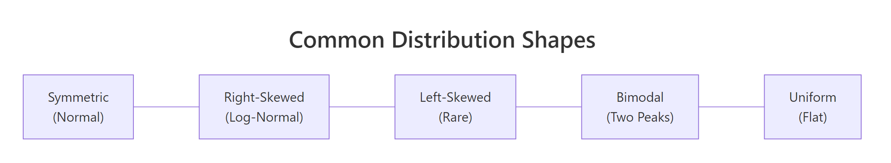
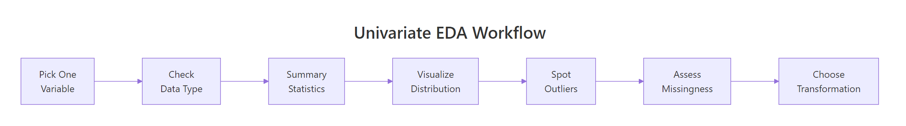

Univariate EDA in R: Every Variable Deserves Individual Attention Before Modelling
Univariate EDA is the practice of examining one variable at a time, its distribution shape, central tendency, spread, outliers, and missing values, before you combine variables or fit a model. Skip this step and you risk feeding garbage into an algorithm that won't complain until it's too late.
What does a single variable look like before you touch it?
Before you build a model, ask a simpler question: what does each column actually contain? A quick summary reveals the range, typical values, and immediate red flags, like a minimum of -999 that screams "missing data in disguise." Let's start with the airquality dataset, which tracks daily air measurements in New York across the summer of 1973.
RFirst look with summary
# Quick vital signs for every columnaq <- airqualitysummary(aq)#> Ozone Solar.R Wind Temp#> Min. : 1.00 Min. : 7.0 Min. : 1.700 Min. :56.00#> 1st Qu.: 18.00 1st Qu.:115.5 1st Qu.: 7.400 1st Qu.:72.00#> Median : 31.50 Median :205.0 Median : 9.700 Median :79.00#> Mean : 42.13 Mean :185.9 Mean : 9.958 Mean :77.88#> 3rd Qu.: 63.25 3rd Qu.:258.8 3rd Qu.:11.500 3rd Qu.:85.00#> Max. :168.00 Max. :334.0 Max. :20.700 Max. :97.00#> NA's :37 NA's :7#> Month Day#> Min. :5.000 Min. : 1.0#> 1st Qu.:6.000 1st Qu.: 8.0#> Median :7.000 Median :16.0#> Mean :6.993 Mean :15.8#> 3rd Qu.:8.000 3rd Qu.:23.0#> Max. :9.000 Max. :31.0
Right away you can see that Ozone has 37 missing values and Solar.R has 7. Ozone ranges from 1 to 168, that's a massive spread, and its mean (42.1) is well above its median (31.5), which hints at right-skewness. You already know three things worth investigating, and you haven't drawn a single chart yet.
Key Insight
summary() is your fastest diagnostic tool. When mean is much larger than median, the variable is right-skewed. When NAs appear, you know exactly which columns need missing-data handling. One function, three findings.
Now let's check the data types, because the analysis strategy depends on whether a variable is numeric, integer, or factor.
RStructure of the data frame
# Check structure and typesstr(aq)#> 'data.frame': 153 obs. of 6 variables:#> $ Ozone : int 41 36 12 18 NA 28 23 19 8 NA ...#> $ Solar.R: int 190 118 149 313 NA NA 299 99 19 194 ...#> $ Wind : num 7.4 8 12.6 11.5 14.3 14.9 8.6 13.8 20.1 8.6 ...#> $ Temp : int 67 72 74 62 56 66 65 59 61 69 ...#> $ Month : int 5 5 5 5 5 5 5 5 5 5 ...#> $ Day : int 1 2 3 4 5 6 7 8 9 10 ...
Ozone, Solar.R, Temp, Month, and Day are integers. Wind is numeric (has decimals). Month and Day are technically numeric but represent calendar values, you'd treat them differently than continuous measurements. This distinction matters: you wouldn't compute skewness for Month.
Try it: Run summary() on the built-in mtcars dataset and identify which variable has the largest range (max minus min).
RExercise: range of mtcars columns
# Try it: find the variable with the largest range in mtcarssummary(mtcars)# Look at min and max for each variable# Which one has the biggest gap?
Click to reveal solution
RExercise solution
# Check the range of each variablesapply(mtcars, function(x) max(x) -min(x))#> mpg cyl disp hp drat wt qsec vs am#> 23.50 4.00 400.90 283.00 2.17 3.91 8.40 1.00 1.00#> gear carb#> 2.00 7.00
Explanation:disp (displacement) has the largest range at 400.9, followed by hp (horsepower) at 283. Large ranges often signal the need for scaling before modelling.
How do you visualize the distribution of a numeric variable?
Numbers alone can't tell you whether a variable is bell-shaped, has two peaks, or trails off to the right. You need a picture. The histogram is the workhorse of univariate visualization, it chops the range into bins and counts how many observations fall in each.
RHistogram of ozone
# Histogram of Ozone, the shape tells the storyhist(aq$Ozone, main ="Distribution of Ozone Levels", xlab ="Ozone (ppb)", col ="steelblue", breaks =20)#> (histogram displayed: right-skewed, most values below 50,#> long tail stretching to 168)
The histogram reveals a strongly right-skewed distribution. Most days have ozone below 50 ppb, but a handful of extreme days push past 100. This shape is typical of environmental measurements and suggests that the mean is being pulled up by those high values.
A density plot gives you a smoother view of the same information. Think of it as a histogram with infinitely narrow bins, it traces the underlying curve.
RDensity curve of ozone
# Density plot, a smoothed view of the distributionozone_clean <- aq$Ozone[!is.na(aq$Ozone)]plot(density(ozone_clean), main ="Density of Ozone Levels", xlab ="Ozone (ppb)", col ="darkred", lwd =2)#> (smooth curve displayed: single peak near 20, long right tail)
The density confirms one clear peak around 20 ppb with a long right tail. There's no second peak, so we're dealing with a unimodal distribution, just a skewed one.

Figure 2: Common distribution shapes you will encounter during univariate analysis.
You can also overlay a density curve onto a histogram for the best of both worlds. The trick is to set freq = FALSE in the histogram so the y-axis shows density instead of counts.
ROverlay density on histogram
# Histogram + density overlayhist(ozone_clean, freq =FALSE, main ="Ozone: Histogram + Density Overlay", xlab ="Ozone (ppb)", col ="lightblue", breaks =20)lines(density(ozone_clean), col ="darkred", lwd =2)#> (histogram with smooth density curve overlaid)
Tip
Always set na.rm = TRUE (or filter NAs first) when your data has missing values. Functions like density(), mean(), and sd() silently return NA if even one value is missing. Filtering upfront with !is.na() avoids this trap.
Try it: Create a histogram of airquality$Temp with 15 breaks. Is the distribution symmetric, left-skewed, or right-skewed?
RExercise: histogram of temp
# Try it: histogram of Temphist(aq$Temp, breaks =15, main ="Distribution of Temperature", xlab ="Temperature (F)", col ="coral")# Describe the shape: symmetric, left-skewed, or right-skewed?
Click to reveal solution
RExercise solution
hist(aq$Temp, breaks =15, main ="Distribution of Temperature", xlab ="Temperature (F)", col ="coral")#> (histogram displayed: roughly symmetric, slight left skew,#> peak around 80-85 F)
Explanation: Temperature is roughly symmetric with a slight left skew, most days cluster around 75-85°F, and fewer days are cool. This is much closer to a normal distribution than Ozone.
What do skewness and kurtosis actually tell you?
You've seen the histogram, but how do you quantify "how skewed is this?" That's what skewness and kurtosis do, they put a number on the shape.
Skewness measures asymmetry. A perfectly symmetric distribution (like the normal) has skewness = 0. Positive skewness means the right tail is longer (values trail off to the right). Negative skewness means the left tail is longer.
Kurtosis measures tail heaviness. Higher kurtosis means more extreme values (fatter tails). The normal distribution has a kurtosis of 3, so "excess kurtosis" (kurtosis minus 3) tells you how much heavier or lighter the tails are compared to normal.
Let's compute both for Ozone using base R.
RManual skewness and kurtosis
# Skewness: how asymmetric is the distribution?n <-length(ozone_clean)skew_ozone <- (sum((ozone_clean -mean(ozone_clean))^3) / n) / (sum((ozone_clean -mean(ozone_clean))^2) / n)^(3/2)cat("Skewness of Ozone:", round(skew_ozone, 3), "\n")#> Skewness of Ozone: 1.208# Kurtosis: how heavy are the tails?kurt_ozone <- (sum((ozone_clean -mean(ozone_clean))^4) / n) / (sum((ozone_clean -mean(ozone_clean))^2) / n)^2cat("Kurtosis of Ozone:", round(kurt_ozone, 3), "\n")cat("Excess kurtosis:", round(kurt_ozone -3, 3), "\n")#> Kurtosis of Ozone: 3.844#> Excess kurtosis: 0.844
A skewness of 1.21 confirms the right-skew we saw in the histogram. The excess kurtosis of 0.84 tells us the tails are slightly heavier than a normal distribution, consistent with those high ozone days pulling the distribution rightward.
Here's a quick reference for interpreting these numbers:
Skewness value
Interpretation
-0.5 to 0.5
Approximately symmetric
-1 to -0.5 or 0.5 to 1
Moderately skewed
Below -1 or above 1
Highly skewed, consider transforming
Excess kurtosis
Interpretation
Near 0
Normal-like tails
> 1
Heavy tails (more extreme outliers)
< -1
Light tails (fewer extremes than normal)
Key Insight
A skewness above 1 or below -1 is your signal that a log or sqrt transform might help before modelling. Many regression methods assume roughly symmetric residuals, and transforming a heavily skewed predictor often improves fit.
Try it: Compute the skewness of airquality$Wind (no NAs in Wind, so no filtering needed). Is it symmetric, left-skewed, or right-skewed?
RExercise: wind skewness
# Try it: skewness of Windex_wind <- aq$Windex_n <-length(ex_wind)ex_skew <- (sum((ex_wind -mean(ex_wind))^3) / ex_n) / (sum((ex_wind -mean(ex_wind))^2) / ex_n)^(3/2)cat("Skewness of Wind:", round(ex_skew, 3))#> Expected: a value between 0 and 1 (mild right skew)
Explanation: A skewness of 0.34 falls in the "approximately symmetric" range (-0.5 to 0.5). Wind speed is much closer to a normal distribution than Ozone, no transformation needed.
How do you spot and handle outliers?
Outliers aren't automatically "bad data." A temperature of 115°F in Phoenix is extreme but real. A temperature of 999°F is a data entry error. Your job during EDA is to find them, what you do about them depends on domain knowledge.
The boxplot is the classic outlier detector. It draws a box from the 25th to 75th percentile (the IQR), with whiskers extending to 1.5 × IQR beyond each edge. Anything past the whiskers gets flagged as an outlier.
RBoxplot highlighting outliers
# Boxplot with outlier valuesbp <-boxplot(aq$Ozone, main ="Boxplot of Ozone Levels", ylab ="Ozone (ppb)", col ="lightyellow", outcol ="red", outpch =16)cat("Outlier values:", bp$out, "\n")#> Outlier values: 115 135 168
Three values, 115, 135, and 168, sit above the upper whisker. These are the highest ozone days in the dataset. Are they errors? Probably not, ozone can spike during heat waves. But they could distort a linear model.
Let's identify these outliers programmatically using the IQR rule so you can apply this to any variable.
The lower bound is negative (impossible for ozone), so there are no low-end outliers. Two values exceed the upper bound of 131.1 ppb. Notice that the boxplot flagged 115 as an outlier too, boxplot uses a slightly different calculation internally. The IQR method is more transparent and reproducible.
Warning
Removing outliers without investigation is one of the most common EDA mistakes. Always ask: is this value physically possible? Could it be a measurement artefact? Blindly deleting extreme values can remove the most informative observations in your dataset.
One safe alternative to deletion is winsorizing, capping outliers at the whisker boundaries rather than removing them.
RWinsorise values to bounds
# Winsorize: cap extreme values at the boundariesozone_capped <- ozone_cleanozone_capped[ozone_capped > upper] <- upperozone_capped[ozone_capped < lower] <- lowercat("Before capping - Max:", max(ozone_clean), "\n")cat("After capping - Max:", max(ozone_capped), "\n")cat("Before capping - Mean:", round(mean(ozone_clean), 2), "\n")cat("After capping - Mean:", round(mean(ozone_capped), 2), "\n")#> Before capping - Max: 168#> After capping - Max: 131.125#> Before capping - Mean: 42.13#> After capping - Mean: 41.59
Capping brought the maximum down from 168 to 131 and barely moved the mean (42.1 → 41.6). That's the beauty of winsorizing, it reduces the influence of extremes without throwing away data points.
Try it: Use the IQR rule to find outliers in airquality$Wind. How many outliers does Wind have?
Explanation: Wind has 3 high-end outliers, all above 17.6 mph. These are windy days but not unreasonable for summer in New York.
How much missing data is too much?
Missing data is the silent problem in most datasets. A variable with 5% missing is easy to handle, impute with the median and move on. A variable with 60% missing might need to be dropped entirely, because any imputation would be more guess than data.
Let's count the damage across all columns.
RMissing counts and percentages
# Count and percentage of NAs per columnna_counts <-colSums(is.na(aq))na_pct <-round(100* na_counts /nrow(aq), 1)data.frame( NAs = na_counts, Percent =paste0(na_pct, "%"))#> NAs Percent#> Ozone 37 24.2%#> Solar.R 7 4.6%#> Wind 0 0.0%#> Temp 0 0.0%#> Month 0 0.0%#> Day 0 0.0%
Ozone has 24.2% missing, that's significant but workable. Solar.R has 4.6%, easy to impute. The other four columns are complete. A visual makes the pattern even clearer.
RBarplot of missing percentages
# Visual: missing data bar plotbarplot(na_pct[na_pct >0], main ="Missing Data by Variable", ylab ="% Missing", col =c("tomato", "orange"), ylim =c(0, 30), las =1)abline(h =c(5, 20), lty =2, col ="gray50")#> (bar chart: Ozone at ~24%, Solar.R at ~5%,#> dashed lines at 5% and 20% thresholds)
The dashed lines mark common thresholds: below 5% is "impute and forget," 5-20% is "impute carefully," and above 20% starts raising questions about whether the variable is reliable enough to use.
Note
The airquality dataset has real NAs in Ozone (37/153 = 24%) and Solar.R (7/153 = 5%), making it a perfect test case for missing data analysis. These aren't simulated gaps; the monitoring equipment genuinely failed on those days.
Try it: Write code to find which rows have NAs in both Ozone and Solar.R simultaneously. How many rows have both missing?
RExercise: rows missing both ozone and solar
# Try it: rows with NAs in both Ozone AND Solar.Rex_both_na <- aq[is.na(aq$Ozone) &is.na(aq$Solar.R), ]# your code here: how many rows?
Click to reveal solution
RExercise solution
ex_both_na <- aq[is.na(aq$Ozone) &is.na(aq$Solar.R), ]cat("Rows with both Ozone and Solar.R missing:", nrow(ex_both_na), "\n")ex_both_na#> Rows with both Ozone and Solar.R missing: 2#> Ozone Solar.R Wind Temp Month Day#> 5 NA NA 14.3 56 5 5#> 27 NA NA 14.9 66 5 27
Explanation: Only 2 rows have both columns missing simultaneously. This suggests the missingness patterns are mostly independent, equipment failures in the ozone monitor didn't usually coincide with solar radiation monitor failures.
When should you transform a variable (and which transformation)?
A skewed variable can distort model coefficients, inflate variance, and violate the normality assumptions that many statistical tests rely on. Transformations "compress" the long tail and pull the distribution closer to symmetric.
The two most common transformations are log (for strong right skew) and square root (for moderate right skew). Let's see how they work on Ozone.
RLog transform with side by side plots
# Log transformation: before and afterozone_log <-log(ozone_clean)par(mfrow =c(1, 2))hist(ozone_clean, breaks =20, main ="Original Ozone", xlab ="Ozone (ppb)", col ="steelblue")hist(ozone_log, breaks =20, main ="Log-Transformed Ozone", xlab ="log(Ozone)", col ="darkseagreen")par(mfrow =c(1, 1))#> (side-by-side histograms: left shows right-skewed original,#> right shows much more symmetric log-transformed version)
The log transform dramatically reduces the right skew. Let's confirm with numbers.
RSkewness before and after transforms
# Compare skewness: original vs. log vs. sqrtozone_sqrt <-sqrt(ozone_clean)skew_fn <-function(x) { n <-length(x) (sum((x -mean(x))^3) / n) / (sum((x -mean(x))^2) / n)^(3/2)}data.frame( Version =c("Original", "Log", "Sqrt"), Skewness =round(c(skew_fn(ozone_clean),skew_fn(ozone_log),skew_fn(ozone_sqrt)), 3))#> Version Skewness#> 1 Original 1.208#> 2 Log -0.058#> 3 Sqrt 0.459
The log transform brought skewness from 1.21 all the way to -0.06, nearly perfectly symmetric. The sqrt transform improved it to 0.46, which is acceptable but not as good. For Ozone, log is the clear winner.
Tip
Use log1p() instead of log() when your variable contains zeros. log(0) is undefined (negative infinity in R), but log1p(0) = log(1+0) = 0. This is especially common with count data.
A Q-Q plot gives you one more visual check. If the points follow the diagonal line, the data is approximately normal.
RNormal Q Q plots
# Q-Q plots: before and after log transformpar(mfrow =c(1, 2))qqnorm(ozone_clean, main ="Q-Q Plot: Original Ozone", pch =16, col ="steelblue")qqline(ozone_clean, col ="red", lwd =2)qqnorm(ozone_log, main ="Q-Q Plot: Log Ozone", pch =16, col ="darkseagreen")qqline(ozone_log, col ="red", lwd =2)par(mfrow =c(1, 1))#> (left Q-Q plot: points curve away from line at upper end,#> right Q-Q plot: points follow the line closely)
The original Q-Q plot shows the characteristic upward curve of right-skewed data, points peel away from the line at the high end. After the log transform, the points hug the line much more closely. This variable is now ready for methods that assume normality.
Try it: Apply a sqrt transformation to airquality$Wind and compare the Q-Q plots before and after. Does Wind need a transformation?
RExercise: square root transform on wind
# Try it: Q-Q plots for Wind, before and after sqrtex_wind_sqrt <-sqrt(aq$Wind)par(mfrow =c(1, 2))qqnorm(aq$Wind, main ="Q-Q: Original Wind")qqline(aq$Wind, col ="red")qqnorm(ex_wind_sqrt, main ="Q-Q: Sqrt Wind")qqline(ex_wind_sqrt, col ="red")par(mfrow =c(1, 1))# Does Wind need the transformation?
Click to reveal solution
RExercise solution
ex_wind_sqrt <-sqrt(aq$Wind)par(mfrow =c(1, 2))qqnorm(aq$Wind, main ="Q-Q: Original Wind", pch =16, col ="steelblue")qqline(aq$Wind, col ="red", lwd =2)qqnorm(ex_wind_sqrt, main ="Q-Q: Sqrt Wind", pch =16, col ="darkseagreen")qqline(ex_wind_sqrt, col ="red", lwd =2)par(mfrow =c(1, 1))#> (both Q-Q plots follow the line closely)
Explanation: Both Q-Q plots look good, the original Wind data is already close to normal (skewness was only 0.34). The sqrt transform offers minimal improvement. When the original distribution is already symmetric, don't transform, you'd just make interpretation harder.
How do you analyze a categorical variable?
Not every variable is numeric. Factor and character columns need a different toolkit: frequency tables and bar charts instead of histograms and density plots. The key questions are: how many levels exist, are the categories balanced, and do any levels need merging?
Let's treat mtcars$cyl (number of cylinders: 4, 6, or 8) as a categorical variable.
RFrequency and proportion tables
# Frequency table and proportionscyl_table <-table(mtcars$cyl)cyl_table#> 4 6 8#> 11 7 14prop.table(cyl_table)#> 4 6 8#> 0.34375 0.21875 0.43750
Eight-cylinder cars make up 44% of the dataset, four-cylinder cars 34%, and six-cylinder cars 22%. No single level dominates overwhelmingly, so this variable should have predictive value.
A bar plot makes the comparison visual.
RBarplot of cylinder counts
# Bar plot of cylinder frequenciesbarplot(cyl_table, main ="Car Count by Number of Cylinders", xlab ="Cylinders", ylab ="Count", col =c("steelblue", "coral", "darkseagreen"), las =1)#> (bar chart: 4=11, 6=7, 8=14 cars)
The distribution is reasonably balanced. If one level had contained 95% of observations (imagine 30 out of 32 cars being 4-cylinder), that variable would provide almost no predictive signal and you might consider dropping it or merging levels.
Key Insight
A categorical variable with one level dominating 95%+ of observations provides almost no predictive signal. If "Yes" appears 980 times and "No" only 20 times, a model can achieve 98% accuracy by always predicting "Yes", the variable isn't helping.
Try it: Create a frequency table for mtcars$gear. Which gear count is least common?
RExercise: gear frequency table
# Try it: frequency table for gearex_gear_table <-table(mtcars$gear)ex_gear_table#> Expected: one gear value has fewer cars than the others
Explanation: 5-gear cars are least common with only 5 observations. This could make that category unreliable in a model, 5 data points is a thin basis for estimating a coefficient.
Practice Exercises
Exercise 1: Full Univariate Profile of mpg
Create a complete univariate profile of mtcars$mpg: compute mean, median, standard deviation, skewness, and outlier count (using the IQR rule). Then create a histogram and a boxplot side by side. Summarize your findings in a comment.
RPractice one: full mpg profile
# Exercise 1: Full univariate profile of mtcars$mpg# Hint: combine summary stats + skewness + IQR outlier detection + plots# Write your code below:
Click to reveal solution
RPractice one solution
my_mpg <- mtcars$mpg# Summary statscat("Mean:", round(mean(my_mpg), 2), "\n")cat("Median:", median(my_mpg), "\n")cat("SD:", round(sd(my_mpg), 2), "\n")#> Mean: 20.09#> Median: 19.2#> SD: 6.03# Skewnessmy_n <-length(my_mpg)my_skew <- (sum((my_mpg -mean(my_mpg))^3) / my_n) / (sum((my_mpg -mean(my_mpg))^2) / my_n)^(3/2)cat("Skewness:", round(my_skew, 3), "\n")#> Skewness: 0.611# Outlier detectionmy_Q1 <-quantile(my_mpg, 0.25)my_Q3 <-quantile(my_mpg, 0.75)my_iqr <- my_Q3 - my_Q1my_outliers <- my_mpg[my_mpg < my_Q1 -1.5* my_iqr | my_mpg > my_Q3 +1.5* my_iqr]cat("Outliers:", length(my_outliers), "values:", my_outliers, "\n")#> Outliers: 1 values: 33.9# Plotspar(mfrow =c(1, 2))hist(my_mpg, breaks =10, main ="Histogram of MPG", xlab ="Miles per Gallon", col ="steelblue")boxplot(my_mpg, main ="Boxplot of MPG", ylab ="Miles per Gallon", col ="lightyellow")par(mfrow =c(1, 1))# Finding: mpg is moderately right-skewed (0.61),# with one outlier (33.9 mpg, the Toyota Corolla).# Mean > median confirms the right skew.
Explanation: This profile combines descriptive stats, shape measurement, outlier detection, and visualization, exactly the workflow you'd apply to every numeric column in a real dataset.
Exercise 2: Reusable Univariate Profile Function
Write a function my_profile(x) that takes a numeric vector and prints: the mean, median, standard deviation, skewness, number of outliers (IQR rule), and missing percentage. Then apply it to every numeric column of airquality using sapply().
RPractice two: reusable my profile
# Exercise 2: Create a reusable univariate profile function# Hint: define the function, then use sapply(aq[, 1:4], my_profile)# Write your code below:
Explanation: Wrapping the analysis in a function lets you profile 4 columns with one line of code. The output immediately reveals that Ozone is the most problematic variable: highest skewness, 2 outliers, and 24% missing.
For iris$Sepal.Width: detect outliers with the IQR rule, apply a log transform, compare Q-Q plots before and after, and state whether the transformation improved normality.
RPractice three: iris sepal width log
# Exercise 3: iris$Sepal.Width, outliers + transformation# Hint: IQR outlier detection, then log transform, then qqnorm/qqline# Write your code below:
Explanation: Sepal.Width has 4 outliers and a skewness of 0.32, already close to symmetric. The log transform reduces skewness to near-zero (-0.03) and tightens the Q-Q plot slightly. In practice, the improvement is marginal, you could justify using either version.
Putting It All Together
Let's walk through a complete univariate analysis on airquality$Ozone, the full workflow from raw data to a modelling-ready recommendation.

Figure 1: The univariate EDA workflow: one variable at a time, from raw data to modelling-ready.
REnd-to-end ozone workflow
# === Complete Univariate EDA: airquality$Ozone ===# Step 1: Summary statscat("=== Summary Statistics ===\n")cat("N:", length(aq$Ozone), "\n")cat("Non-missing:", sum(!is.na(aq$Ozone)), "\n")cat("Missing:", sum(is.na(aq$Ozone)), "(", round(100*mean(is.na(aq$Ozone)), 1), "%)\n")cat("Mean:", round(mean(ozone_clean), 2), "\n")cat("Median:", median(ozone_clean), "\n")cat("SD:", round(sd(ozone_clean), 2), "\n")cat("Range:", min(ozone_clean), "-", max(ozone_clean), "\n")#> === Summary Statistics ===#> N: 153#> Non-missing: 116#> Missing: 37 ( 24.2 %)#> Mean: 42.13#> Median: 31.5#> SD: 33.28#> Range: 1 - 168# Step 2: Distribution shapecat("\n=== Shape ===\n")cat("Skewness:", round(skew_fn(ozone_clean), 3), "\n")cat("Excess kurtosis:", round(kurt_ozone -3, 3), "\n")#> === Shape ===#> Skewness: 1.208#> Excess kurtosis: 0.844# Step 3: Outlier detectioncat("\n=== Outliers (IQR rule) ===\n")cat("Lower bound:", lower, "\n")cat("Upper bound:", upper, "\n")cat("Outliers:", length(outlier_rows), "values:", outlier_rows, "\n")#> === Outliers (IQR rule) ===#> Lower bound: -49.875#> Upper bound: 131.125#> Outliers: 2 values: 135 168# Step 4: Transformation assessmentcat("\n=== Transformation ===\n")cat("Original skewness:", round(skew_fn(ozone_clean), 3), "\n")cat("Log skewness:", round(skew_fn(log(ozone_clean)), 3), "\n")cat("Sqrt skewness:", round(skew_fn(sqrt(ozone_clean)), 3), "\n")#> === Transformation ===#> Original skewness: 1.208#> Log skewness: -0.058#> Sqrt skewness: 0.459# Step 5: Final recommendationcat("\n=== Recommendation ===\n")cat("Ozone is right-skewed (1.21) with 24% missing.\n")cat("Log-transform before modelling.\n")cat("Impute NAs with median of log-transformed values.\n")cat("Cap 2 outliers at upper bound if model is sensitive to extremes.\n")#> === Recommendation ===#> Ozone is right-skewed (1.21) with 24% missing.#> Log-transform before modelling.#> Impute NAs with median of log-transformed values.#> Cap 2 outliers at upper bound if model is sensitive to extremes.
That's the complete univariate story for one variable. In a real project, you'd run this analysis (or the my_profile() function from Exercise 2) on every column before touching any modelling code.
Figure 3: Decision flow: what to do when you find outliers, skewness, or missing data.
The key takeaway: every variable you plan to use in a model deserves five minutes of individual attention. Check the shape, count the NAs, look for outliers, and decide whether a transformation helps. These five minutes can save you hours of debugging a model that "isn't working" because the inputs were never inspected.
References
Tukey, J.W., Exploratory Data Analysis. Addison-Wesley (1977). The foundational text on EDA philosophy and methods.
Wickham, H. & Grolemund, G., R for Data Science, 2nd Edition. O'Reilly (2023). Chapter 11: Exploratory Data Analysis. Link
R Core Team, ?summary, ?hist, ?boxplot built-in documentation. Link
NIST/SEMATECH, e-Handbook of Statistical Methods: Exploratory Data Analysis. Link
Kabacoff, R., Modern Data Visualization with R. Chapter 4: Univariate Graphs. Link
Penn State STAT 500, Lesson 1: Summarizing Data. Link